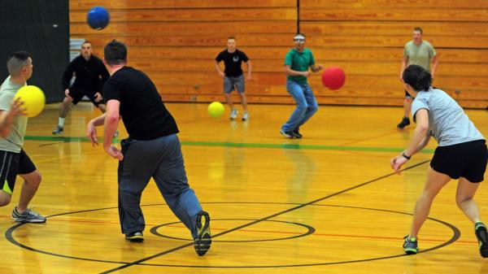

Inicio
Inicio
Salazar Ramírez Sergio Santiago
Contacto
Correo: sssr308a@gmail.com
Teléfono: +52 55 7854 2404
Experiencia
LLevo 4 semestres estudiando para desarrollo de software interactivo y videojuegos.
Habilidades
Idiomas
Acerca
Mi Nombre probablemente ya lo leyeron muchas veces, pero me llamo Sergio, nací el 5 de mayo de 2003 y siempre me han gustado los videojuegos, es por eso que decidí estudiar como se hacían, llevo 2 años en la carrera y a pesar de que se me ha llegado a dificultar es algo que me gusta.
Tengo poca experiencia en proyectos sencillos, por lo general me gusta hacer juegos en 2D ya que por lo general trabajo solo y me resulta más sencillo trabajar así.
Habilidades
| Programar en C# |
|---|
| Dibujado y prototipado |
| Modelado 3D |
| Uso de Git y GitHub |
| Uso de Unreal Engine |
Proyectos
| Duncra_mvl | Juego Dodgeball vr |
|---|---|
 Un pequeño juego metroidvania para celular Un pequeño juego metroidvania para celular |
La idea es hacer un juego multijugador en el que combinamos el dodgeball con power ups en VR. |
Contacto
Correo: sssr308a@gmail.com
Teléfono: +52 55 7854 2404